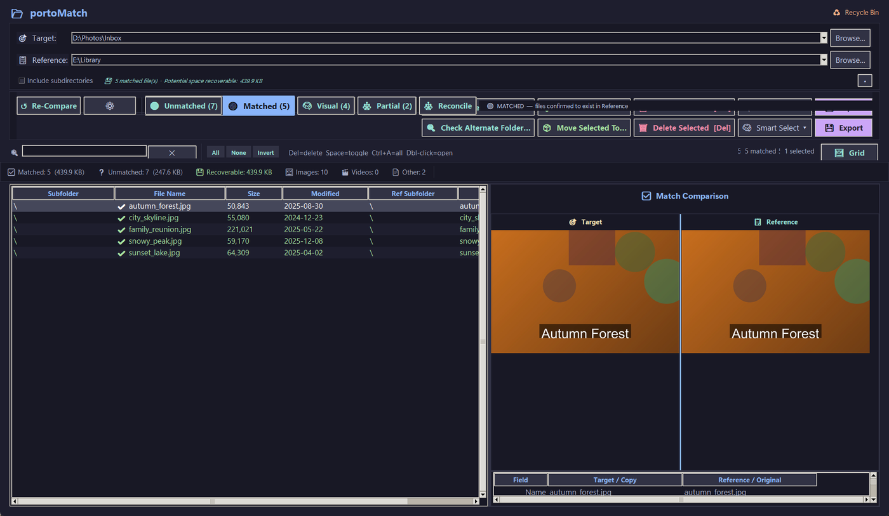
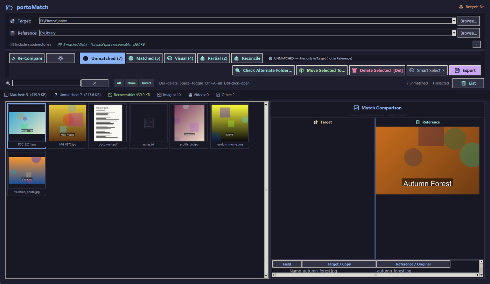
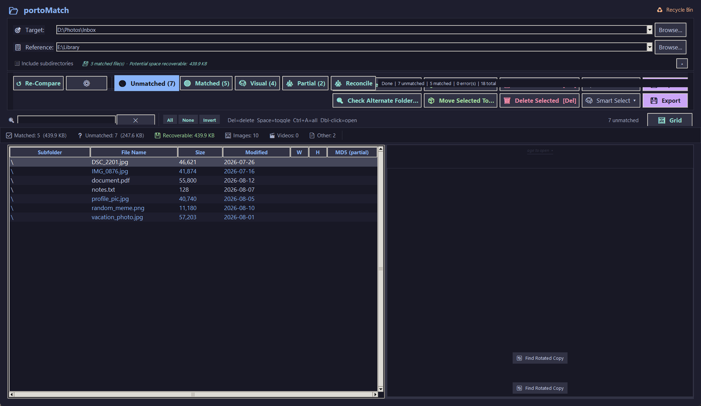

Compare folders safely. Curate media, clean up duplicates, and verify backups.
portoMatch compares folders, finds exact and near-duplicate images, and helps you curate media, clean up safely, and verify backups on Windows.
Download for WindowsFree for personal use · Windows 10/11 · No installer, no admin rights · About the SmartScreen warning

Most "duplicate finders" happily delete whatever they flag. portoMatch is built the other way around: it only ever proposes removing a target file when it has confirmed a copy exists in the reference, it defaults deletions to the Recycle Bin, and it writes every removal to a CSV audit log. Deletions and moves are only ever proposed for target files; the only way anything reaches the reference folder is a file you explicitly promote into it.
| Tier | Meaning |
|---|---|
| Exact | Size, timestamp, hash and dimensions all agree |
| Strong | Almost everything agrees, one minor discrepancy |
| Review | Size plus one other signal — worth a human glance |
| Partial | Same image content, different file metadata |
| Visual | Visually similar image within a fuzzy threshold |
Gallery view — every target file as a thumbnail, so duplicates are obvious at a glance:

Detail list — sortable columns with sizes, dates, dimensions and partial hashes:

Comparing folders, side-by-side review, deleting/moving with an audit trail, the Rejected workflow, Smart Select, session save/restore, cold-storage manifests (Lite) — all free with no catch: no licence needed, no time limit, no nag beyond an occasional reminder.
A Pro licence removes that reminder, authorises commercial use, and additionally unlocks:
$35 one-time · up to 3 computers
.sha256 file next to the zip if you want to verify the download yourself.
Every release's notes also carry a VirusTotal report link for that exact zip.
portoMatch talks to the network for exactly two things, and never on its own without you clicking something. The update prompt can be switched off in Settings; the licence check only happens if you activated a Lemon Squeezy key:
Nothing else ever leaves your computer. Your files, filenames, and folder paths are never sent anywhere.